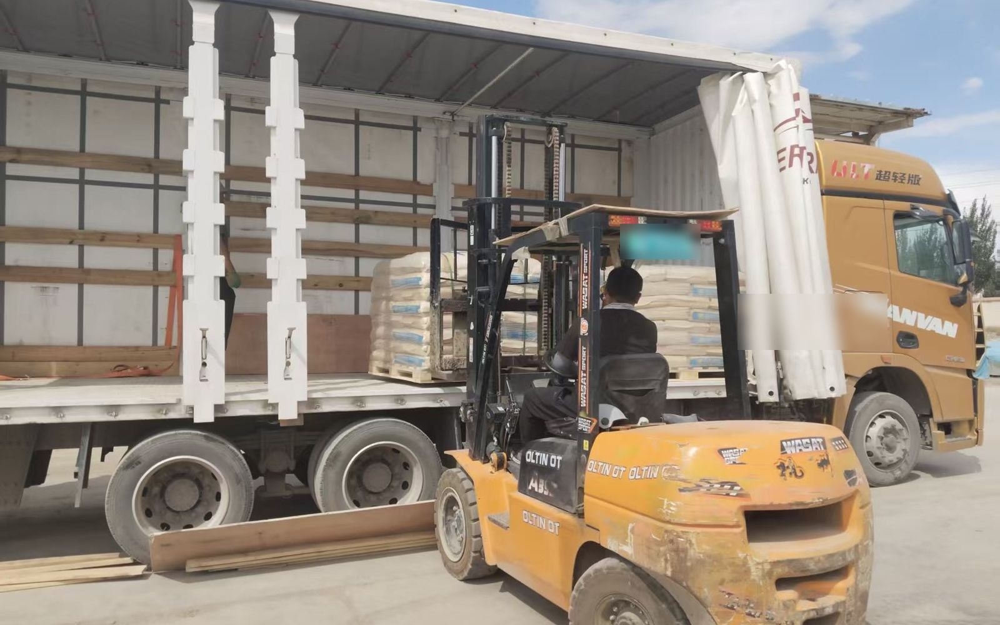

FTL / LTL
FTL or LTL
Two ways to load China to Iran: full truckload (FTL) and less than truckload (LTL). Both are about 22 days to the Tehran terminal, not the door.
- FTL: one shipper per truck, sealed, fewer openings, TIR-capable, steadier schedule
- LTL: consolidated, waits for the load, more handling, suits small volumes
- The split depends on volume, weight, value and timing — confirmed per booking
- Both are about 22 days to the Tehran terminal
Full truckload (FTL)
One shipper owns the truck. Sealed at origin, fewer openings at crossings, can run under TIR. Schedule is steadier. Large, urgent, or opening-sensitive cargo goes FTL.
Less than truckload (LTL)
Consolidated. It ships once the truck is full, so you wait for the load. More pallet handling and openings in transit. Suits small volumes.
Where the line is
It depends on volume and weight, and on cargo value and how time-sensitive it is. The exact threshold follows current consolidation — quote only.
Exit crossing: Wuqia adds 0.4% of invoice value; Khorgos does not. Pay in RMB or offshore.

To get a quote, send four things: item name; quantity or weight; destination city; Wuqia or Khorgos.
Related: How to request a quote · Wuqia or Khorgos · Freight cost